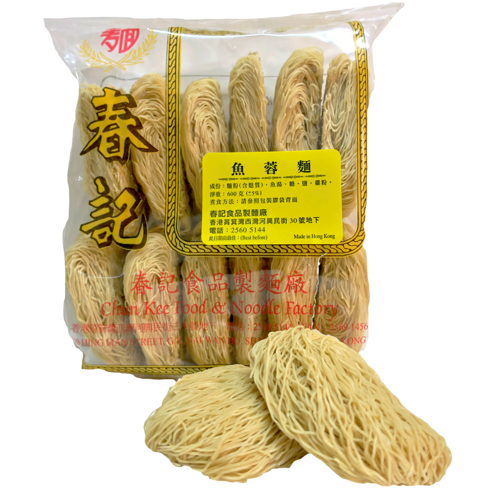

魚蓉麵Fish Noodles

麵條種類: 粗麵, 幼麵
每包(一斤):$50
per pack: $50
價格於2018年1月更新
Price changed on Jan 2018
魚湯 ，特選麵粉製成 。麵質軟滑 ，適合湯麵 、撈麵或煨麵。
The noodles are made from fish soup stock and high-gluten flour. The smooth texture and fresh taste of noodles are suitable for noodle soup or seasoned noodles.
主要材料
Main Ingredients
魚湯, 麵粉, 蛋
fish stock, flour, eggs
烹調方法
Cooking Methods
湯麵
Noodle Soup
1. 先將麵用凍水浸約四至六分鐘。
2. 放入沸水中(一碗半)煮約2 分鐘, (時間長些,麵條較軟滑; 時間短些, 麵調較爽)。 將麵條鬆開, 加入蔬菜、肉類、熟油及適量配味, 調成上湯, 即可食用。
1. Soak the noodles in cold water for four to six minutes.
2. Put it in one and a half bowl of boiling water and cook for about two minutes. (the longer cooking time, the softer the texture; the shorter cooking time, the firmer the texture). Stir the noodles, and add vegetables, meat, cooked oil, and seasonings, and soup stock, as desired.
撈麵
Seasoned Noodles
如上述湯麵煮法, 將麵條煮開後, 撈起加入熟油及撈麵調味(蠔油或豉油等)即可食用。
Start with same method as making soup noodle. When the noodles are cooked, season the noodles with cooked oil and noodle seasonings of your choice (e.g, oyster sauce or soya sauce).
炒麵
Stir-frying Noodles
1. 如上述湯麵煮法, 將已煮的麵條撈起,瀝乾水分。
2. 將肉類蔬菜及配料等炒至快熟後, 加入麵條及適量調味炒勻即可食用。
1. Start with same method as making soup noodle. Then drain the noodles.
2. Stir-fry the meat, vegetables and other ingredients, then add in noodles and seasonings until fully cooked.
微波爐煮法
Microwave Cooking Method
1. 將麵餅放入大湯碗中, 先用凍水浸二至三分鐘, 然後將整碗麵連水放入爐中, 用高火煮兩分鐘。
2. 待微波爐停止操作後, 取出湯碗用筷子將面鬆開, 再放入微波爐中,用高火煮一分鐘。
3. 然後取出湯麵, 加入少許麻油 配料及適量調味料即可食用。
1. Place the noodle in a big soup bowl and soak in cold water for two to three minutes. Then, put the whole bowl of noodles into the microwave on high heat for two minutes.
2. Take out the soup bowl out of microwave, stir it with chopsticks, and put it back in the microwave, and cook for one minute with high heat.
3. Take out the noodles from the microwave, and add a little sesame oil and seasonings.